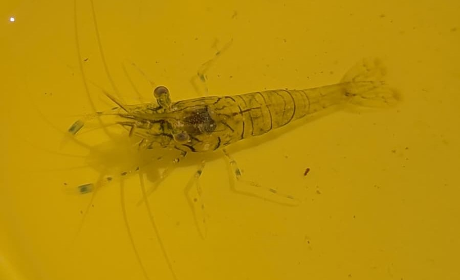

Petite crevette rose
Palaemon elegans
La petite crevette rose est l'une des crevettes les plus communes du littoral européen. Très active, elle fréquente les mares rocheuses, les herbiers marins et les ports où elle se déplace rapidement grâce à ses puissants battements de queue.
Informations scientifiques
| Nom scientifique | Palaemon elegans |
|---|---|
| Nom commun | Petite crevette rose |
| Famille | Palaemonidae |
| Ordre | Decapoda |
| Classe | Malacostraca |
| Habitat | Mares rocheuses, herbiers et lagunes |
| Répartition | Atlantique Est, Manche, Méditerranée |
| Taille | 2 à 6 cm. |
| Espérance de vie | 1 à 2 ans |
| Alimentation | Omnivore, détritivore et nécrophage |
Description
Palaemon elegans possède un corps translucide parcouru de bandes brunâtres et de reflets rosés. Ses longues antennes lui permettent de détecter les mouvements et les odeurs dans son environnement.
Très agile, elle nage rapidement en effectuant des bonds vers l'arrière lorsqu'elle est menacée.
Cette crevette joue un rôle important dans les écosystèmes côtiers en consommant des algues, des petits invertébrés et de la matière organique.
On l'observe facilement dans les mares découvertes à marée basse où elle vit souvent en petits groupes.